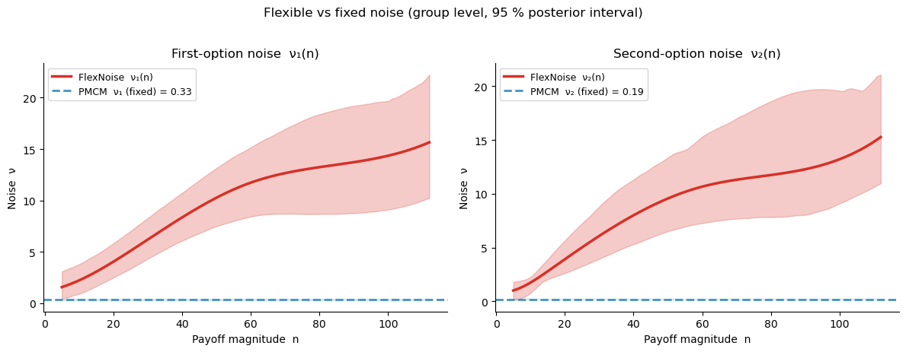
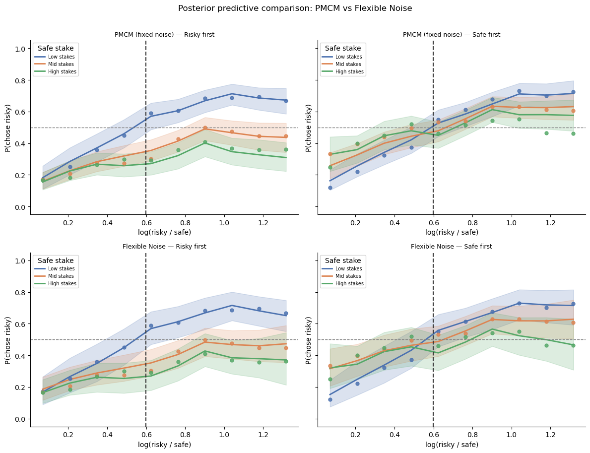

Lesson 4: Flexible Noise Curves — the FlexibleNoiseRiskModel¶
Motivation: noise in natural space vs log space¶
The PMCM (lesson 3) assumes a single fixed noise level per presentation position: \(\nu_1\) for the first option and \(\nu_2\) for the second. These scalars are defined in natural (linear) payoff space.
The NLC model predicts scale invariance: noise is constant on a logarithmic scale. When translated back to natural space, constant log-scale noise implies that natural-space noise grows linearly with magnitude — this is just Weber’s law:
So the scale-invariant prediction for the flexible model is a linear curve \(\nu(n) \propto n\), not a flat one. A flat curve in natural space would mean constant absolute discriminability — which would actually imply improving relative precision at higher magnitudes (a violation of Weber’s law in the opposite direction).
The Flexible Noise Model replaces fixed scalars with polynomial curves \(\nu_k(n)\), allowing the data to reveal the actual noise-vs-magnitude relationship:
where \(\phi_j\) are polynomial basis functions and \(p\) is the polynomial order (default 5).
Linear posterior \(\Rightarrow\) scale invariance (Weber’s law) holds
Sub-linear \(\Rightarrow\) better-than-Weber precision at large magnitudes
Super-linear or curved \(\Rightarrow\) violations (e.g., compressed representation at extremes)
[1]:
import warnings; warnings.filterwarnings('ignore')
import numpy as np
import pandas as pd
import matplotlib.pyplot as plt
import seaborn as sns
import arviz as az
from bauer.utils.data import load_dehollander2024
from bauer.models import RiskModel, FlexibleNoiseRiskModel
# Use dot-cloud data (both sessions) as in lesson 3
df_dot = load_dehollander2024(task='dotcloud', sessions=['3t2', '7t2'])
print(f"Subjects: {df_dot.index.get_level_values('subject').nunique()}, Trials: {len(df_dot)}")
# Prep helper (same as lesson 3)
def prep_df(df):
df = df.reset_index()
risky_first = df['p1'] == 0.55
df['log_ratio'] = np.log(
np.where(risky_first, df['n1'], df['n2']) /
np.where(risky_first, df['n2'], df['n1']))
df['chose_risky'] = np.where(risky_first, ~df['choice'], df['choice'])
df['n_safe'] = np.where(risky_first, df['n2'], df['n1'])
df['risky_first'] = risky_first
df['order'] = np.where(risky_first, 'Risky first', 'Safe first')
df['log_ratio_bin'] = (pd.cut(df['log_ratio'], bins=10)
.apply(lambda x: x.mid).astype(float))
df['n_safe_bin'] = pd.qcut(df['n_safe'], q=3,
labels=['Low stakes', 'Mid stakes', 'High stakes'])
return df
df_dot_p = prep_df(df_dot)
Subjects: 30, Trials: 11445
Illustrating flexible noise curves¶
Before fitting, we show what different noise-curve shapes look like and how they would shift the psychometric function at different magnitude levels.
[2]:
from scipy.stats import norm as scipy_norm
n_vals = np.linspace(5, 45, 200)
nu_log = 0.30 # log-scale Weber fraction
log_ratios = np.linspace(-1.5, 1.5, 300)
fig, axes = plt.subplots(1, 2, figsize=(12, 4.5))
# Left: noise curves in natural space — linear = Weber's law null
ax = axes[0]
noise_curves = [
('Linear ν(n) = ν₀·n [Weber / scale-invariant]',
nu_log * n_vals / n_vals.mean(), '#2166ac', '-'),
('Flat ν(n) = const [better precision at large n]',
np.full_like(n_vals, nu_log), '#d73027', '--'),
('Super-linear [worse precision at large n]',
nu_log * (n_vals / n_vals.mean())**1.8, '#1a9850', ':'),
]
for label, nu_n, c, ls in noise_curves:
ax.plot(n_vals, nu_n, lw=2.5, color=c, ls=ls, label=label)
ax.set_xlabel('Payoff magnitude n (natural space)')
ax.set_ylabel('Noise ν(n)')
ax.set_title('Noise-vs-magnitude curves in natural space')
ax.legend(fontsize=8.5); sns.despine(ax=ax)
# Right: linear = constant log-ratio discrimination (Weber law)
ax = axes[1]
for n_ref, c, ls in [(8, '#4393c3', '-'), (20, '#1a9850', '--'), (36, '#d73027', ':')]:
nu_lin = nu_log * n_ref / n_vals.mean() # linear Weber noise
nu_flat = nu_log # flat (constant) noise
p_lin = scipy_norm.cdf(log_ratios / (np.sqrt(2) * nu_lin))
p_flat = scipy_norm.cdf(log_ratios / (np.sqrt(2) * nu_flat))
ax.plot(log_ratios, p_lin, color=c, lw=2.5, ls=ls, label=f'Linear ν (n={n_ref})')
ax.plot(log_ratios, p_flat, color=c, lw=1.2, ls=ls, alpha=.4)
ax.axhline(.5, ls='--', c='gray', lw=1)
ax.axvline(0, ls='--', c='gray', lw=1)
ax.text(0.97, 0.07, 'Faint: flat ν (constant)', transform=ax.transAxes,
ha='right', fontsize=8, color='gray')
ax.set_xlabel('log(n2 / n1)')
ax.set_ylabel('P(chose n2)')
ax.set_title('Linear noise (Weber): psychometric slope varies with n')
ax.legend(fontsize=8.5); sns.despine(ax=ax)
plt.suptitle('Natural-space noise — linear = Weber / scale-invariant baseline',
fontsize=12, y=1.02)
plt.tight_layout()

Fit models — PMCM vs Flexible Noise¶
We fit both the PMCM (fixed noise) and the Flexible Noise model on the dot-cloud data so we can directly compare them.
[3]:
# ── PMCM (fixed noise) ───────────────────────────────────────────────────────
model_pmcm = RiskModel(paradigm=df_dot, prior_estimate='full',
fit_seperate_evidence_sd=True)
model_pmcm.build_estimation_model(data=df_dot, hierarchical=True, save_p_choice=True)
idata_pmcm = model_pmcm.sample(draws=100, tune=100, chains=2, progressbar=True)
Initializing NUTS using jitter+adapt_diag...
Multiprocess sampling (2 chains in 2 jobs)
NUTS: [n1_evidence_sd_mu_untransformed, n1_evidence_sd_sd, n1_evidence_sd_offset, n2_evidence_sd_mu_untransformed, n2_evidence_sd_sd, n2_evidence_sd_offset, risky_prior_mu_mu, risky_prior_mu_sd, risky_prior_mu_offset, risky_prior_sd_mu_untransformed, risky_prior_sd_sd, risky_prior_sd_offset, safe_prior_mu_mu, safe_prior_mu_sd, safe_prior_mu_offset, safe_prior_sd_mu_untransformed, safe_prior_sd_sd, safe_prior_sd_offset]
Sampling 2 chains for 100 tune and 100 draw iterations (200 + 200 draws total) took 70 seconds.
We recommend running at least 4 chains for robust computation of convergence diagnostics
The rhat statistic is larger than 1.01 for some parameters. This indicates problems during sampling. See https://arxiv.org/abs/1903.08008 for details
The effective sample size per chain is smaller than 100 for some parameters. A higher number is needed for reliable rhat and ess computation. See https://arxiv.org/abs/1903.08008 for details
[4]:
# ── Flexible Noise model (polynomial noise curves) ───────────────────────────
model_flex = FlexibleNoiseRiskModel(paradigm=df_dot, prior_estimate='full',
fit_seperate_evidence_sd=True, polynomial_order=5)
model_flex.build_estimation_model(paradigm=df_dot, hierarchical=True, save_p_choice=True)
idata_flex = model_flex.sample(draws=100, tune=100, chains=2, progressbar=True)
Initializing NUTS using jitter+adapt_diag...
Multiprocess sampling (2 chains in 2 jobs)
NUTS: [n1_evidence_sd_spline1_mu, n1_evidence_sd_spline1_sd, n1_evidence_sd_spline1_offset, n1_evidence_sd_spline2_mu, n1_evidence_sd_spline2_sd, n1_evidence_sd_spline2_offset, n1_evidence_sd_spline3_mu, n1_evidence_sd_spline3_sd, n1_evidence_sd_spline3_offset, n1_evidence_sd_spline4_mu, n1_evidence_sd_spline4_sd, n1_evidence_sd_spline4_offset, n1_evidence_sd_spline5_mu, n1_evidence_sd_spline5_sd, n1_evidence_sd_spline5_offset, n2_evidence_sd_spline1_mu, n2_evidence_sd_spline1_sd, n2_evidence_sd_spline1_offset, n2_evidence_sd_spline2_mu, n2_evidence_sd_spline2_sd, n2_evidence_sd_spline2_offset, n2_evidence_sd_spline3_mu, n2_evidence_sd_spline3_sd, n2_evidence_sd_spline3_offset, n2_evidence_sd_spline4_mu, n2_evidence_sd_spline4_sd, n2_evidence_sd_spline4_offset, n2_evidence_sd_spline5_mu, n2_evidence_sd_spline5_sd, n2_evidence_sd_spline5_offset, risky_prior_mu_mu, risky_prior_mu_sd, risky_prior_mu_offset, risky_prior_sd_mu_untransformed, risky_prior_sd_sd, risky_prior_sd_offset, safe_prior_mu_mu, safe_prior_mu_sd, safe_prior_mu_offset, safe_prior_sd_mu_untransformed, safe_prior_sd_sd, safe_prior_sd_offset]
Sampling 2 chains for 100 tune and 100 draw iterations (200 + 200 draws total) took 223 seconds.
We recommend running at least 4 chains for robust computation of convergence diagnostics
The rhat statistic is larger than 1.01 for some parameters. This indicates problems during sampling. See https://arxiv.org/abs/1903.08008 for details
The effective sample size per chain is smaller than 100 for some parameters. A higher number is needed for reliable rhat and ess computation. See https://arxiv.org/abs/1903.08008 for details
Posterior noise curves \(\nu_k(n)\)¶
The group-level posterior noise curves show whether noise is flat (like PMCM assumes) or varies systematically with magnitude. The shaded band is the 95 % posterior interval across posterior samples.
[5]:
# Get group-level noise curves from the flexible model
# Returns long-format DataFrame with MultiIndex (chain, draw, x)
sd_curves = model_flex.get_sd_curve(idata=idata_flex, variable='both',
group=True, data=df_dot.reset_index())
# PMCM fixed noise posteriors (scalar per sample)
nu1_pmcm = idata_pmcm.posterior['n1_evidence_sd_mu'].values.ravel()
nu2_pmcm = idata_pmcm.posterior['n2_evidence_sd_mu'].values.ravel()
fig, axes = plt.subplots(1, 2, figsize=(12, 4.5))
colors = {'flex': '#d73027', 'pmcm': '#4393c3'}
for ax, (var_col, nu_pmcm, label_flex, label_pmcm) in zip(
axes,
[('n1_evidence_sd', nu1_pmcm, 'FlexNoise ν₁(n)', 'PMCM ν₁ (fixed)'),
('n2_evidence_sd', nu2_pmcm, 'FlexNoise ν₂(n)', 'PMCM ν₂ (fixed)')]):
# Group by x to get posterior mean and 95% CI across (chain, draw) samples
grp = sd_curves.groupby(level='x')[var_col]
x_vals = grp.mean().index.values
mean = grp.mean().values
lo = grp.quantile(0.025).values
hi = grp.quantile(0.975).values
ax.fill_between(x_vals, lo, hi, alpha=.25, color=colors['flex'])
ax.plot(x_vals, mean, lw=2.5, color=colors['flex'], label=label_flex)
# PMCM fixed noise
ax.axhline(nu_pmcm.mean(), ls='--', lw=2, color=colors['pmcm'],
label=f'{label_pmcm} = {nu_pmcm.mean():.2f}')
ax.fill_between(x_vals,
np.percentile(nu_pmcm, 2.5),
np.percentile(nu_pmcm, 97.5),
alpha=.15, color=colors['pmcm'])
ax.set_xlabel('Payoff magnitude n')
ax.set_ylabel('Noise ν')
ax.legend(fontsize=9); sns.despine(ax=ax)
axes[0].set_title('First-option noise ν₁(n)')
axes[1].set_title('Second-option noise ν₂(n)')
plt.suptitle('Flexible vs fixed noise (group level, 95 % posterior interval)',
fontsize=12, y=1.02)
plt.tight_layout()

Posterior predictive comparison¶
We reuse the PPC helper from lesson 3 and overlay both models’ predictions against the observed presentation-order × stake-size interaction.
[6]:
stake_pal = {'Low stakes': '#4C72B0', 'Mid stakes': '#DD8452', 'High stakes': '#55A868'}
def add_model_ppc(df_orig, df_prepped, model, idata, model_name, n_ppc_samples=50):
ppc_df = model.ppc(df_orig, idata, var_names=['p'])
ppc_p = ppc_df.xs('p', level='variable')
cols = np.random.choice(ppc_p.columns,
size=min(n_ppc_samples, ppc_p.shape[1]),
replace=False)
ppc_p = ppc_p[cols]
risky_first = df_prepped['risky_first'].values
p_risky = np.where(risky_first[:, None], 1 - ppc_p.values, ppc_p.values)
df_out = df_prepped.copy()
df_out['p_mean'] = p_risky.mean(1)
df_out['p_lo'] = np.percentile(p_risky, 2.5, axis=1)
df_out['p_hi'] = np.percentile(p_risky, 97.5, axis=1)
df_out['model'] = model_name
return df_out
def plot_ppc_row(df_pred, model_name, axes_row):
hue_order = ['Low stakes', 'Mid stakes', 'High stakes']
for ax, order_val in zip(axes_row, ['Risky first', 'Safe first']):
sub = df_pred[df_pred['order'] == order_val]
obs = sub.groupby(['n_safe_bin', 'log_ratio_bin'])['chose_risky'].mean().reset_index()
pred = (sub.groupby(['n_safe_bin', 'log_ratio_bin'])[['p_mean', 'p_lo', 'p_hi']]
.mean().reset_index())
for sbin in hue_order:
o = obs[obs['n_safe_bin'] == sbin]
p = pred[pred['n_safe_bin'] == sbin]
if len(o) == 0:
continue
c = stake_pal[sbin]
ax.fill_between(p['log_ratio_bin'], p['p_lo'], p['p_hi'], color=c, alpha=.2)
ax.plot(p['log_ratio_bin'], p['p_mean'], color=c, lw=2, label=sbin)
ax.scatter(o['log_ratio_bin'], o['chose_risky'],
color=c, s=25, zorder=5, alpha=.85)
ax.axhline(.5, ls='--', c='gray', lw=1)
ax.axvline(np.log(1/.55), ls='--', c='#333333', lw=1.5)
ax.set_ylim(-.05, 1.05)
ax.set_title(f'{model_name} — {order_val}', fontsize=9)
ax.set_xlabel('log(risky / safe)'); ax.set_ylabel('P(chose risky)')
ax.legend(title='Safe stake', fontsize=7, loc='upper left')
sns.despine(ax=ax)
fig, axes = plt.subplots(2, 2, figsize=(12, 9), sharey=True)
for (mdl, idat, name), row in zip(
[(model_pmcm, idata_pmcm, 'PMCM (fixed noise)'),
(model_flex, idata_flex, 'Flexible Noise')],
axes):
df_pred = add_model_ppc(df_dot, df_dot_p, mdl, idat, name)
plot_ppc_row(df_pred, name, row)
plt.suptitle('Posterior predictive comparison: PMCM vs Flexible Noise',
fontsize=12, y=1.01)
plt.tight_layout()
Sampling: []
Sampling: []

Take-aways¶
If the posterior noise curves are flat, the flexible model reduces to the PMCM and adds no explanatory value.
If the curves are rising or curved, this indicates that noise is not constant across magnitudes — violating the pure scale-invariance prediction of the NLC model.
The flexible model’s PPC will tend to capture the stake-dependent spread more accurately when noise truly varies, because it can assign different noise to high- and low-magnitude safe/risky options within the same trial.
In practice, compare model fit with
az.compare({'PMCM': idata_pmcm, 'Flex': idata_flex})after computing log-likelihoods (requiresidata_kwargs={'log_likelihood': True}inmodel.sample()).